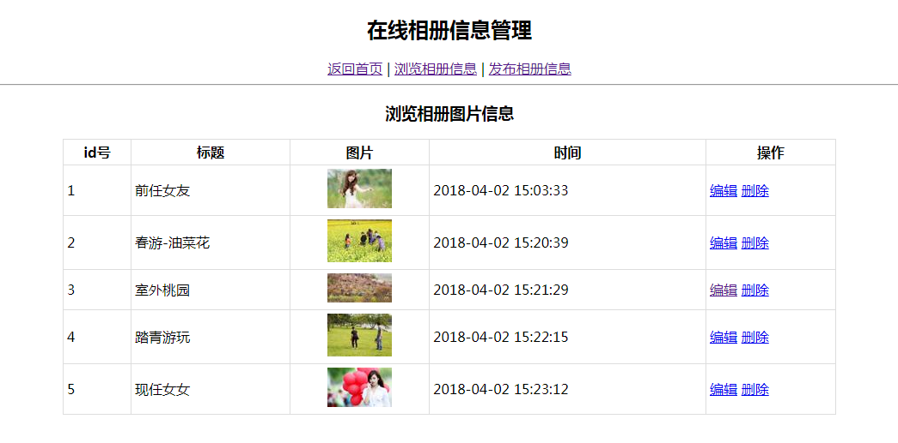
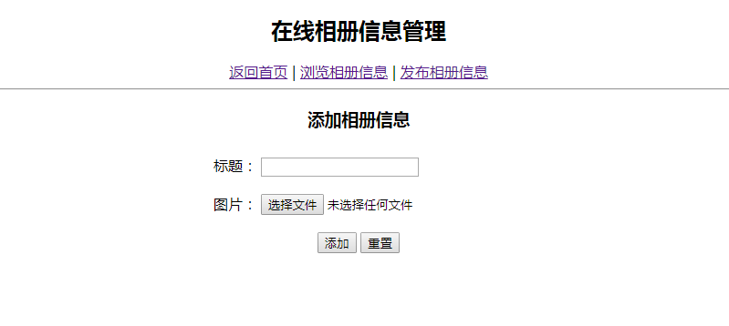
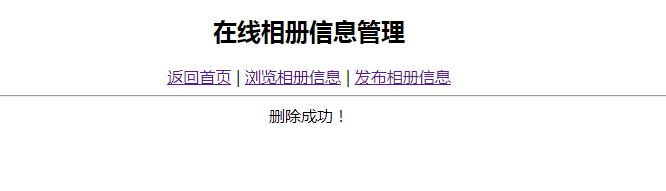
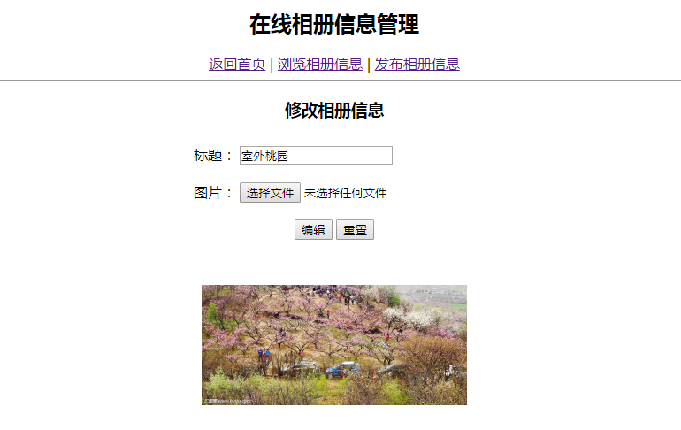

本周作业
一、 问题描述：
1). 通过本周学习使用Django框架完成一个《在线相册信息管理》，要求实现在线相册信息的增、删、改、查等操作，要求使用到的技术有：Django框架、MySQL数据存储、文件上传、图片缩放、数据分页。显示效果如下：




二、 解题提示：
参考老师的课堂实例，首先实现数据的增、删、改和查操作，然后再考虑带图片上传的处理。 注意：相册中上传的图片不写入数据库，只要将上传的图片名信息写入表中即可
三、 批改标准：
a) Django的框架搭建（10分）
b) 相册信息添加功能（信息添加，图片上传和缩放）（30分）
c) 相册信息浏览（信息和图片的浏览，分页功能）（20分）。
d) 相册信息编辑（信息编辑，可更换图片）（20分）
e) 相册信息删除（要求同时删除图片）（10分）
f) 其他项：10分（文件结构清晰，代码整洁，要求适量的注释）。